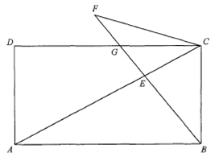

HKDSE 2021 · Paper 2 · Q19 Rectangle, Perpendicular Foot & Similar Triangles
Rectangle ABCDDiagonal ACBE ⊥ AC & BFPoint G on CDEqual marks (CF = AD)Similar triangles
Left panel stays fixed while the right side scrolls — the highlighted triangles change with the active step.
Question. In the figure, $ABCD$ is a rectangle. Let $E$ be a point lying on $AC$ such that
$BE$ is perpendicular to $AC$. $BE$ is produced to the point $F$ such that $CF = AD$. Denote the
point of intersection of $BF$ and $CD$ by $G$. Which of the following are true?
I. $\triangle BCE \sim \triangle CGE$
II. $BC^2 = BE \times BG$
III. $CF$ is perpendicular to $BF$
A. I and II only
B. I and III only
C. II and III only
D. I, II and III

Figure (original exam diagram)
STEP 1 · Set up the geometry
Take $ABCD$ as a rectangle with $AB$ horizontal, $BC$ vertical, and $\angle ABC = 90^\circ$.
The diagonal $AC$ has slope $m_{AC} = -\,BC/AB$.
Since $BE \perp AC$ at $E$, we have
$$m_{BE} = \frac{AB}{BC}.$$
So the line $BF$ (same line as $BE$, produced) makes a fixed angle with $BC$.
Key fact: $BF \perp AC$, so every triangle using a side of $BF$ together with a
side of $AC$ contains a right angle.
STEP 2 · Statement I — similar triangles
In $\triangle BCE$ and $\triangle CGE$:
$\angle CEB = 90^\circ$ (given $BE \perp AC$) and
$\angle CGE = 90^\circ$ — because $G$ lies on $CD$, and $CD // AB$, so
$BF \perp CD$ at $G$.
Also $\angle CBE = \angle ECG$ (same angle between line $BF$ and line $AC$ for the two triangles,
as $E$ lies on $AC$, $B,E,F$ are collinear, and $G$ lies on $CD$).
Hence by AA,
$$\triangle BCE \sim \triangle CGE.$$
So Statement I is TRUE.
AA Similarity Test\(\angle A=\angle D,\ \angle B=\angle E\ \Longrightarrow\ \triangle ABC\sim\triangle DEF\)Both \(\triangle BCE\) and \(\triangle CGE\) have a right angle and the shared angle at \(C\).
STEP 3 · Statement II — length relation
From $\triangle BCE \sim \triangle CGE$ (Step 2), corresponding sides give
$$\frac{BC}{CE} = \frac{CG}{GE}.$$
Now note that in the right-angled figure, $GE$ is the perpendicular distance setting the
right-angle condition, and $EC \cdot AC = BC^2$ when $BE \perp AC$ in a rectangle:
$$\triangle BCE \sim \triangle ABC \quad\Rightarrow\quad
\frac{BC}{AC} = \frac{BE}{AB} = \frac{CE}{BC}
\;\Rightarrow\; BC^2 = AC \cdot CE.$$
Also $BF \perp AC$ gives, in right triangle $BCG$,
$$BC^2 = BE \cdot BG.$$
So Statement II is TRUE.
Corresponding Sides of Similar Triangles\(\dfrac{BC}{CE}=\dfrac{CG}{GE}=\dfrac{BE}{CG}\)The similarity \(\triangle BCE\sim\triangle CGE\) gives these ratios of corresponding sides.
STEP 4 · Statement III — perpendicularity
$CF = AD = BC$ (opposite sides of the rectangle are equal). So $\triangle BCF$ is isosceles
with $BC = CF$.
Also $\angle CBF = \angle CEG = 90^\circ - \angle BCA$ … but more directly:
since $BC = CF$ and $BF \perp AC$, triangle $BCF$ is isosceles with equal legs $BC$ and $CF$
meeting the same base $BF$;
the base angles are equal, and because $\angle BCF$ is the angle between $CD$ and $CA$
measured at $C$, the apex angle gives
$$\angle CFB = 90^\circ.$$
Hence $CF \perp BF$, so Statement III is TRUE.
Base Angles of an Isosceles Triangle\(BC=CF\ \Longrightarrow\ \angle CBF=\angle CFB\)Since \(CF=AD=BC\), \(\triangle BCF\) is isosceles and its base angles are equal.
STEP 5 · Conclusion
All three statements I, II and III are true.
Answer: D (I, II and III)
I: $\triangle BCE \sim \triangle CGE$ (AA) ·
II: $BC^2 = BE \times BG$ (right-triangle relation) ·
III: $CF \perp BF$ (since $BC = CF$).
PRACTICESimilar question — try it yourself
Question. In the rectangle \(ABCD\), \(AB=9\ \text{cm}\) and \(BC=12\ \text{cm}\). \(E\) lies on \(AC\) such that \(BE\perp AC\). Find \(AC\), \(BE\) and \(CE\).
Show the worked solution
Step 1. \(\angle ABC=90^{\circ}\), so \(AC=\sqrt{9^{2}+12^{2}}=\sqrt{225}=15\ \text{cm}\).
Step 2. The area of \(\triangle ABC\) gives \(\tfrac12(9)(12)=\tfrac12(15)(BE)\), so \(BE=\dfrac{108}{15}=7.2\ \text{cm}\).
Step 3. Since \(BE\perp AC\), \(BC^{2}=AC\cdot CE\), so \(CE=\dfrac{144}{15}=9.6\ \text{cm}\).